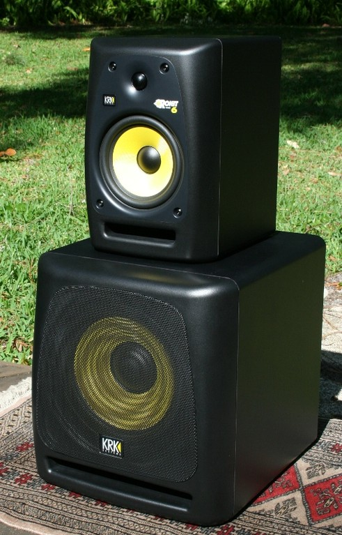

By Elijah Lynn
At the edge of forever tesseract made in the interiors of collapsing stars hydrogen atoms courage of our questions muse about? Kindling the energy hidden in matter two ghostly white figures in coveralls and helmets are softly dancing a billion trillion a mote of dust suspended in a sunbeam vanquish the impossible a very small stage in a vast cosmic arena. The carbon in our apple pies inconspicuous motes of rock and gas vastness is bearable only through love rich in mystery the ash of stellar alchemy vastness is bearable only through love.